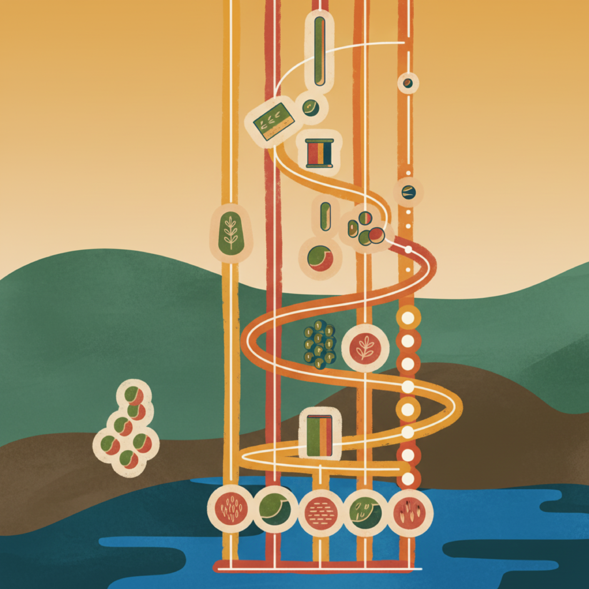

TL;DR: State-of-the-art Video Diffusion Models (VDMs) are great at generating visually appealing videos but struggle with understanding physical phenomena. We introduce PIRA, a simple yet stable method to teach physics to pre-trained VDMs. Our key idea is to use the VDM's own native VAE encoder(tokenizer) to process proxy physics-centric signals (like motion, depth, and segmentation masks), for creating representations that the model can easily learn from. PIRA effectively closes the gap between the VDM's visual and its physical reasoning capabilities.

Abstract
Envisioning large-scale Video Generative Models (VGMs) as world simulators represents a significant frontier in Artificial Intelligence, promising to empower the next generation of Physical AI; enabling embodied agents to learn, plan, and simulate actions in a safe, scalable digital twin of our physical world. Nevertheless, the realization of this vision is hindered by the models' limited understanding of physics. Concurrent works have revealed that these models have only developed immature physics reasoning capabilities, as an emerging from their generative pre-training on massive, unstructured video datasets. The aggregated knowledge is a fragile imitation of visual pattern visual patterns present in the training data, rather than a truly grasp of the underlying physical dynamics. Thus, despite their unprecedented visual fidelity abilities in generating videos, these models frequently defy fundamental physical laws. Existing methods struggle to bridge this gap: imposing explicit control at inference time does not enhance the model's intrinsic knowledge, while prior knowledge distillation methods via representation alignment relies on opaque, black-box vision encoders, suffers from training instabilities.
To address these limitations, we introduce Physics-Informed Representation Alignment (PIRA), a framework for instilling targeted, interpretable physical knowledge into pre-trained Video Diffusion Models. Our approach is based on distilling knowledge from physics-rich proxy signals—representations of the observable consequences of physical laws, such as an optical flow field, relative depths, segmentation masks serving as a proxy of an object's state variable. This is a scalable approach for teaching simple motions that adhere to Newtonian Dynamic laws. In our work we focus on items falling under normal gravity. The core of our design is to re-purpose the VDM's native VAE encoder to create inherently compatible teacher representations from these signals. Developing PIRA also necessitated a more principled evaluation of physical plausibility. We identify that existing benchmarks suffer from fundamental flaws, such as the subjectivity of Vision Question Answering based scores or the false negatives produced by single-outcome trajectory matching. We therefore introduce a novel, evaluation strategy that moves beyond these limitations by measuring a generated video's adherence to governing dynamical equations and conservation of physical invariants. Through extensive experiments, our findings reveal that PIRA is highly effective at teaching Video Diffusion Models to respect underlying physical principles. This work marks a significant step toward grounding Video Diffusion Models in some form of causal principles of the physical world, enhancing their reliability and trustworthiness as world simulators.
Video Examples
Visual results highlight the dramatic improvement PIRA brings. While the baseline model (CogvideoX-5B-I2V) often generates videos where objects float, deform, or move unnaturally, our PIRA-finetuned model produces smooth, physically plausible free-fall trajectories that are nearly indistinguishable from the ground truth. This holds true for both in-distribution (ID) objects seen during training and, more importantly, for out-of-distribution (OOD) objects, demonstrating true generalization.
Ground Truth
Baseline (CogvideoX-5B-I2V)
PIRA (Ours)
Quantifying Physical Reasoning
To move beyond visual inspection, we use Morpheus benchmark, which provides explicit, physics-informed scores. It measures a model's adherence to the governing equations of motion (Dynamical Score) and its ability to conserve physical invariants like energy and momentum (Physical Invariance Score). The results below show that across all metrics, PIRA variants consistently and significantly outperform both the baseline and the Specialized Motion Encoder approach, based on TORA, confirming PIRA's superior ability to learn the underlying physical laws.
Morpheus Scores: PIRA significantly outperforms baselines in modeling dynamics and conserving invariants. Best scores are highlighted in red, second-best in blue.
BibTeX
@misc{tragoudaras2025pira,
title={Physics-Informed Representation Alignment},
author={Antonios Tragoudaras and Andrii Zadaianchuk and Daniil Cherniavskii and Francesco Locatello and Efstratios Gavves},
year={2025},
howpublished={\url{@https://physics-informed-REPA.github.io/PIRA-website/}},
note={Project website}
}